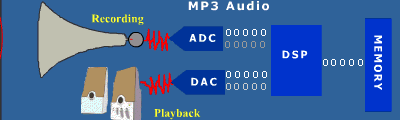
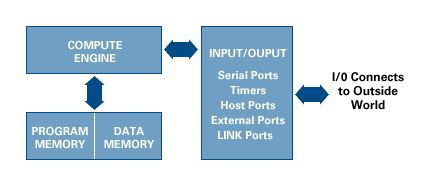

DIGITAL SIGNAL PROCESSING
WHAT IS DSP??
Digital Signal Processors (DSP) take real-world signals like voice, audio, video, temperature, pressure, or position that have been digitized and then mathematically manipulate them. A DSP is designed for performing mathematical functions like "add", "subtract", "multiply" and "divide" very quickly. Signals need to be processed so that the information that they contain can be displayed, analyzed, or converted to another type of signal that may be of use. In the real-world, analog products detect signals such as sound, light, temperature or pressure and manipulate them. Converters such as an Analog-to-Digital converter then take the real-world signal and turn it into the digital format of 1's and 0's. From here, the DSP takes over by capturing the digitized information and processing it. It then feeds the digitized information back for use in the real world. It does this in one of two ways, either digitally or in an analog format by going through a Digital-to-Analog converter. All of this occurs at very high speeds. To illustrate this concept, the diagram below shows how a DSP is used in an MP3 audio player. During the recording phase, analog audio is input through a receiver or other source. This analog signal is then converted to a digital signal by an analog-to-digital converter and passed to the DSP. The DSP performs the MP3 encoding and saves the file to memory. During the playback phase, the file is taken from memory, decoded by the DSP and then converted back to an analog signal through the digital-to-analog converter so it can be output through the speaker system. In a more complex example, the DSP would perform other functions such as volume control, equalization and user interface.
WHAT IS INSIDE DSP??
A DSP contains these key components: Program Memory: Stores the programs the DSP will use to process data Data Memory: Stores the information to be processed Compute Engine: Performs the math processing, accessing the program from the Program Memory and the data from the Data Memory Input/Output: Serves a range of functions to connect to the outside world.
